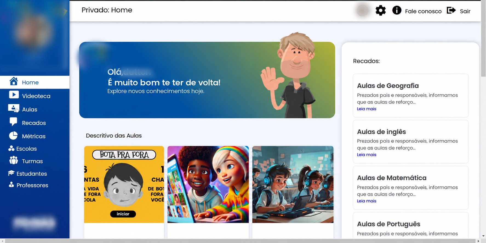
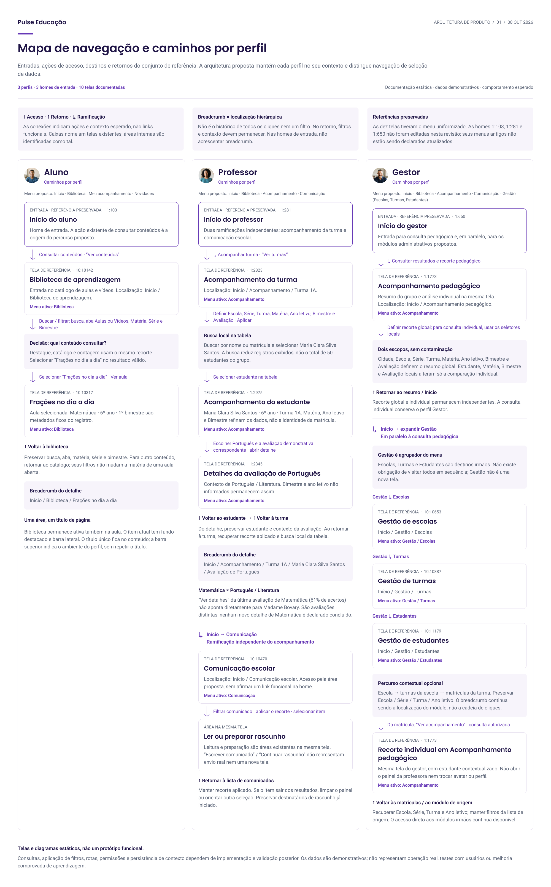
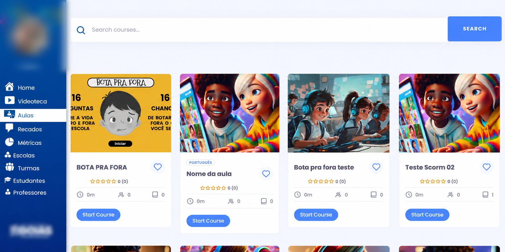
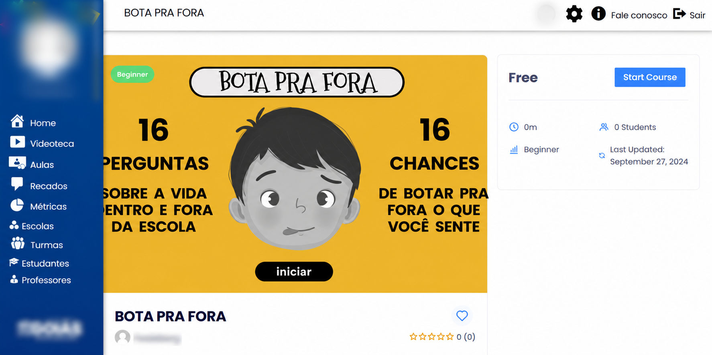
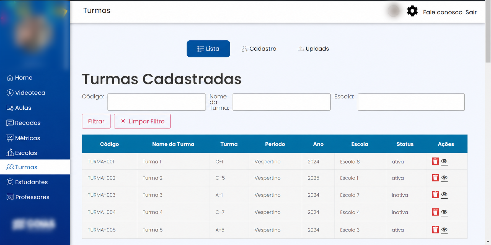
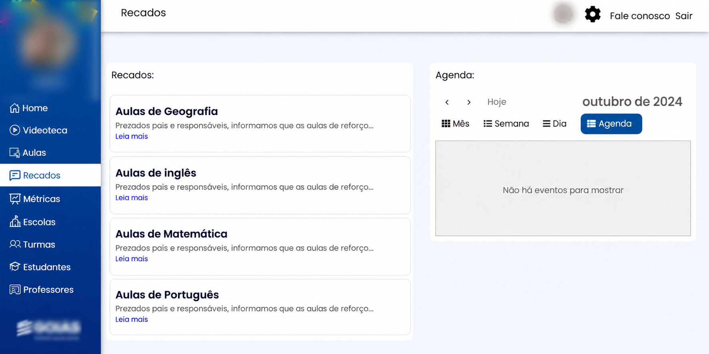

{{ c.nome }}
- —{{ it }}
Redesign de uma plataforma educacional da rede pública, usada por alunos do ensino fundamental e médio e pela gestão das escolas. O desafio não era só redesenhar as telas, mas entender o que realmente precisava melhorar.
Projeto real. Por confidencialidade, o nome, a marca e alguns elementos visuais foram trocados nesta apresentação. Contexto, desafios e minha atuação foram mantidos como aconteceram.
A plataforma apoia escolas da rede pública. De um lado, conteúdo para os alunos: aulas, cursos e uma videoteca. Do outro, a rotina da gestão: recados, agenda, indicadores e o cadastro de escolas, turmas, estudantes e professores.
São públicos e tarefas muito diferentes dividindo a mesma navegação, e isso pesou em boa parte do que encontrei.
Entrei como Product Designer com um pedido claro: melhorar a experiência de uso e a apresentação visual da plataforma.
Ao explorar o sistema, vi que os problemas não estavam só na aparência. Antes de redesenhar, naveguei pela plataforma, mapeei as telas e os recursos, e registrei o que encontrei, incluindo oportunidades que iam além do pedido inicial.
A completar: com quem você trabalhou (PO, devs, gestão), quem trouxe a demanda e o que foi implementado.
Como repensar a plataforma indo além do visual, para que a navegação fique mais clara, consistente e próxima do que cada público precisa?
Observações de uma análise exploratória das telas. Não são problemas comprovados em testes com usuários.
O menu antigo colocava aulas, recados, métricas e cadastros no mesmo nível, para qualquer pessoa. E a Home abria com um banner de boas-vindas que não levava a lugar nenhum.
Antes de redesenhar as telas, mapeei os caminhos de cada perfil: por onde entra, para onde vai e como volta. Aluno, professor e gestor passaram a ter menu e tela inicial próprios, e cada Início abre com três ações para o que fazer em seguida.
Texto escrito a partir das telas. Confirme o porquê e acrescente uma alternativa que você considerou e descartou.




Videoteca e Aulas eram dois lugares para a mesma coisa, com buscas diferentes, capas repetidas, metadados zerados e textos em inglês.
As duas viraram a Biblioteca de aprendizagem, com abas Aulas e Vídeos e uma busca única por título, matéria, série e bimestre. Cada card diz a matéria, a série e o bimestre, em vez de depender da capa.
Dentro da aula, o objetivo vem primeiro e o caminho tem três passos. O resumo em texto permite estudar sem depender do vídeo.
Texto escrito a partir das telas. Confirme o porquê e acrescente uma alternativa que você considerou e descartou.




Nas listas antigas, a lixeira vermelha era o elemento mais forte de cada linha, os rótulos quebravam em várias linhas ao lado dos campos e Filtrar aparecia em vermelho.
Escolas, Turmas e Estudantes passaram a seguir o mesmo modelo: busca e filtros num bloco com rótulos acima dos campos, cadastrar e importar como ações da página, e Ver detalhes ou Editar cadastro em cada linha. Inativar fica dentro dos detalhes. Turmas, abaixo, serve de exemplo para as três.
Texto escrito a partir das telas. Confirme o porquê e acrescente uma alternativa que você considerou e descartou.


Os recados antigos começavam todos com a mesma frase, sem data, remetente ou sinal de leitura, e a agenda vazia ocupava metade da tela.
Em Comunicação escolar, cada comunicado mostra se foi lido, a data, quem enviou e para quem. A leitura abre ao lado da lista, um rascunho pode ser preparado na mesma tela e a agenda tem seu próprio período, com uma mensagem clara quando está vazia.
Texto escrito a partir das telas. Confirme o porquê e acrescente uma alternativa que você considerou e descartou.


A plataforma antiga registrava escolas, turmas e estudantes, mas não mostrava como eles estavam indo. Não havia uma tela equivalente para comparar.
A proposta foi além do pedido visual: usar os resultados das avaliações para orientar o apoio. O professor parte da turma, chega ao estudante e abre uma avaliação; o gestor vê o grupo e, na mesma tela, um estudante.
Texto escrito a partir das telas. Confirme o porquê e acrescente uma alternativa que você considerou e descartou.


Clique em uma tela para vê-la inteira. Os dados nas telas são ilustrativos.
Me conta o contexto — respondo em até um dia útil.